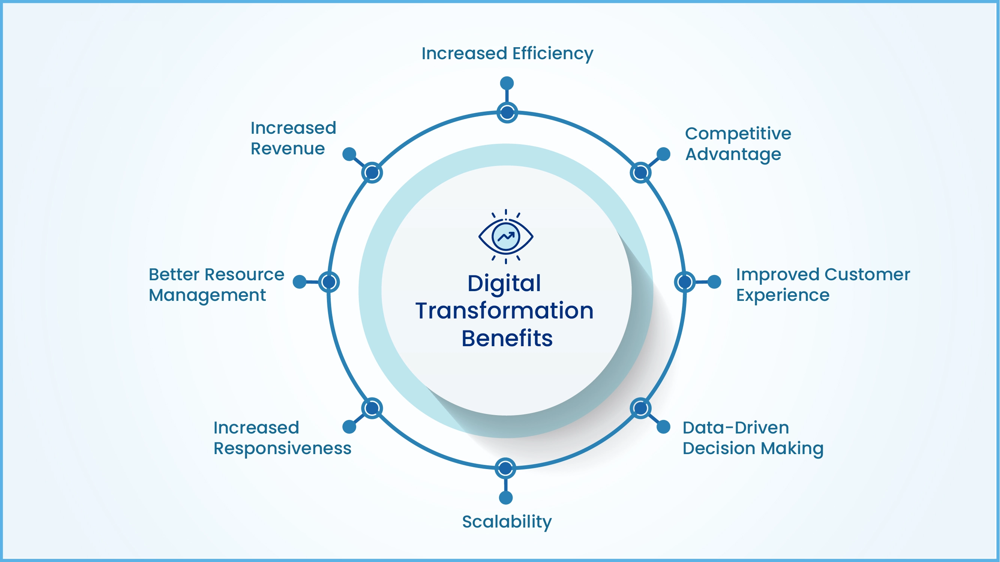

Digital transformation refers to the comprehensive integration of digital technologies into all aspects of an organization, fundamentally altering how businesses operate and deliver value to customers. This transformation goes beyond merely adopting new technologies; it involves a cultural shift that encourages challenging the status quo, fostering experimentation, and embracing change across the organization. Digital transformation is a strategic approach that leverages technology to create value, improve decision-making, and foster growth, ensuring that organizations remain competitive in an increasingly digital world.
Key Aspects of Digital Transformation
- Technology Integration: Implementing advanced digital tools such as cloud computing, artificial intelligence, and data analytics to enhance operations and customer experiences.
- Process Optimization: Redesigning business processes to leverage digital capabilities, streamline operations, and improve efficiency.
- Cultural Change: Promoting a culture that embraces innovation, adaptability, and continuous learning to support and sustain digital initiatives.
Benefits of Digital Transformation

- Enhanced Customer Experiences: Delivering personalized and seamless interactions through digital channels to meet evolving customer expectations.
- Operational Efficiency: Automating processes and utilizing data-driven insights to optimize workflows and reduce costs.
- Agility and Innovation: Enabling rapid adaptation to market changes and fostering the development of new products and services.
- Data-Driven Decision Making: Utilizing analytics to inform strategic decisions and drive business growth.